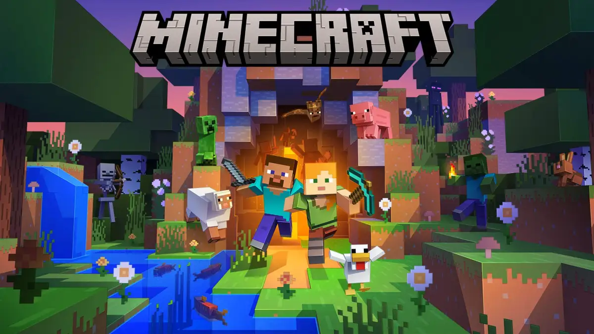

Não existe uma maneira única de jogar Minecraft. Ele é um jogo aberto onde os jogadores decidem por conta própria o que querem fazer!
Mas nós oferecemos diversos modos: o Modo Criativo, onde os jogadores recebem recursos ilimitados para construir qualquer coisa que puderem imaginar; e o Modo Sobrevivência, onde os jogadores devem explorar o mundo e minerar seus recursos para comer, ter onde morar e se defender.
Ou você pode se juntar aos seus amigos on-line e fazer suas próprias regras!
Você pode jogar Minecraft em várias plataformas. Encontre a que combina com você!
Quase todos os blocos do mundo de Minecraft podem ser quebrados através de mineração e coletados. Depois, esses pedaços podem ser recombinados para criar coisas novas!
Bata em uma árvore até conseguir pegar madeira, transforme a madeira em tábuas e, então, combine as tábuas para criar uma bancada de trabalho.
Você pode usar a bancada de trabalho para fazer todo tipo de ferramentas úteis, contanto que encontre os ingredientes certos.
Requisitos mínimos
Sistema operacional: Windows 10 14393.0 ou superior
Processador: Intel Celeron J4105 ou AMD FX-4100
Memória RAM: 4 GB
Placa de vídeo: Intel HD Graphics 4000 ou AMD Radeon R5